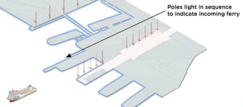
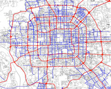

1. Examples
1. Example translations between information and matter
1. Example translations between information and matter
Architecture designed to show digital information through ambient lighting - here street lighting indicating when a ferry will arrive. (Information → Physical) 
3D printing - that is, devices for printing out solid objects (Information → Physical)
RFID tags on everything, allowing everyday objects to be uniquely identified at a distance by a computer (Physical → Information)

In Beijing, Microsoft tracked Taxis round the city to determine how best to reduce traffic. This leads to better solutions than traditional methods. (Physical → Information) 
2. Language
2. Why it's important to get the language right
2. Why it's important to get the language right
The language for describing any emerging technology tends to be muddled and the concepts to which it refers unclear. As terms, Ambient Intelligence, Ubiquitous Computing and the Internet of Things all point up this difficulty - each of them grasping to encapsulate aspects of human-computer interaction. For me, the thing that connects all these ideas is that information is converted into something in the physical world, or some part of the physical world is transmuted into information. I’ll refer to this collection as IoT from here though I realise many people take IoT to have a narrower meaning
In the past we’ve talked about the “real” and the “virtual”, but these terms no longer seem adequate to describe the direction this technology is heading - if they ever made sense at all. The most productive contrast is the one I just highlighted: between the “physical” and the “informational”.
It’s a clearer way of thinking about changes that terms like Internet of Things have been struggling to denote.
The area has enormous potential. Some of the best applications are obvious, others not so. Here are some of the questions I think IoT can answer:
- Why can’t programming be as fun, and intuitive as carpentry?
- When transmitting information is so cheap, isn’t there some way it could reduce the unsustainable amount physical material we consume?
- If thinking in the abstract is so difficult, why do we spend so long working with conceptual representations?
3. Real & Virtual
3. It's not about "virtual" and "real"
3. It's not about "virtual" and "real"
Understandably, many Internet services have been developed by taking some “real world” behaviour and making an analogous, online, or “virtual” version. Email for mail, eCommerce for shops, and so on.
The fact that these new inventions are based on some preceding idea leads to the sense that they are secondary, or imitations. This must be part of the reason that word “virtual” seemed appropriate. While conceiving email as a derivative of postal mail would have felt natural 20 years ago, if anything email now has a bigger presence in people’s lives than postal mail. In this case, it hardly seems fair to call email virtual because of it’s origins. The same can be said for the idea, whatever the etymology implies, that Wikipedia is a “virtual” encyclopedia.
There is another reason to dub email “virtual”: the postal letter has a tangible form while the physical form of email is not so easily discerned . But surely, the main point of any kind of mail is the transmission of written messages. Perhaps once that required sheets of paper, where now it might be achieved with the use of (still physical) things such as ADSL connection and servers. The idea that email is "virtual" in the sense that it "doesn’t really exist" is misguided. How many court cases have rested on the content of emails?
eCommerce might once have been an offshoot of the traditional retail business, but with 12% of UK retail conducted online, it’s certainly a substantial proposition now. So eCommerce is not "virtual" in the sense that it’s some diminutive, insubstantial sibling of its “real” counterpart.
And it is physical, in the sense that you still get your physical goods. The images of the products as viewed on your computer screen are transitory, but does anyone question the reality of catalogue shops? Their realness or otherwise simply isn’t a salient feature.
As if to emphasise the confusion, while online shopping is rising inexorably, the practise of looking something up online and then purchasing in a real shop is increasing even faster. It seems hopeless to ask if Googling for information on a product and then buying from a bricks-and-mortar shop is “real” or “virtual”.
4. Material & Information
4. "Material" / "informational" is a more productive contrast
4. "Material" / "informational" is a more productive contrast
Describing cases where “virtual” and “real” seem confused might persuade you that the language isn’t as clear as it ought to be, but then, isn’t language always a bit imprecise? I’d like to go beyond pedantry and suggest a way of thinking about this area which reduces the scope for confusion, and in so doing makes creative thought easier.
Most computer technology has been informational. It hardly makes a difference if I access the web through a TV, on a smart phone or through an Amazon Kindle - many website you can even successfully print out. This is a deep feature of being informational. The web is primarily about presenting a text and images to my eye. This is not specific to the web, but to anything that is informational. Two sentences written in different hand writing can mean the same thing, while two very similar looking sentences can mean vastly different things. What I’m trying to get at is they do not depend on their physical form, only with complying with a set of rules I have in my brain that allows me to read. You can write a poem with a laser projection or in blood and it is legible. The defining feature of being informational is that physical properties do not matter, what matters is that the mind can reconstruct the meaning.
By contrast physical things depend upon their exact physical properties to function as they do, regardless of how they a perceived by a human.
Take a frying pan. Reeves’ and Mortimer’s slapstick frying pans are useless for cooking because this physical item critically depend on the melting point of the material from which it is made. The opposite is also true: a real frying pan is useless for slapstick because the comedy version needs to be flexible. Appearance is irrelevant, the material is key. This is the mark of the physical.
Of course, this is really just a detailed statement of the obvious: informational things depending on meaning (ie. obey the rules set down by the device that interprets them), while physical things depend on their material properties.
5. The Continuum
5. The continuity between "material" and "informational"
5. The continuity between "material" and "informational"
All things carry information. The structure of a rock gives clues about it’s formation, the rings of a tree encode its age.
And information always has a physical aspect. For example, while I can read something which has been written is or printed in a book, it is essential and vital for any written medium that a there is discernible contrast between the lettering and the background.
Very pure information is that which can be copied, stored and manipulated easily. In this sense, the ones and zeros that computers work with are very pure information. Pure information does not obey the rules of the physical universe, it can be created, copied an manipulated very easily. That’s what makes it useful.
Very physical things are extremely hard to extract information from. Although a rock does in theory contain some information, it’s very hard to read and even specialists can only determine very broad facts.
My contention is that the border between these two worlds is where the Internet of Things live.
6. Examples, again
6. Revisiting the examples
6. Revisiting the examples
The Ferry
The lights at the ferry terminal have an important physical aspect - they illuminate the terminal. However, they also deliver information about the times of the ferries. As a thought experiment we can separate out the two things: in place of the lamps we can imagine a digital display counting down to the next arrival, and flood lights to illuminate the path. Thus we can see that the lights are intrinsically physical and intrinsically informational - "on the spectrum" as it were.
3D Printing
This is the canonical example of transfer between the informational and the physical. You send in binary data, the purest kind of information, and, in theory at least, you can get something entirely physical out. That is to say, an item whose function depends not at all on our perception of it, but only it’s material properties.
Thinking about the continuum helps us understand that such a complete transition is hard. For this reason, it has often been the case that 3D printing is best suited to producing a physical / informational hybrids: prototypes and sculptures. These are things which have important physical properties (they are sufficiently rigid to be three dimensional and resist gravity) but they are to convey an idea, rather than meeting the more stringent physical requirements of, say, a part of a car engine.
RFID tags
These take a physical property of the world - the location of an item - and help make it more informational. It is very hard to a machine to look at an object and identify it - the physical world is too complex. Changes in perspective and lighting pollute the information contained in the visual field. RFID alleviates this problem by radio-transmitting a unique digital code, and thus make the physical world more legible to machines. Objects with RFID tags become more informational.
Taxis in Beijing
Traffic flows are hard to understand. The physical location of cars in Beijing has been converted into information.
When Microsoft analysed GPS data from taxis they discovered that counting cars at intersections gave the wrong results, and optimum planning comes from a more complete understanding of traffic flow. Such is the potential of IoT
7. Editorial objects
7. Editorial objects / embodied information
7. Editorial objects / embodied information
As children, we watch television and it makes us aspire to be presenters, or pop stars. That is, content creators
It seems powerful and exciting, and makes you personally famous. No one saw the glamour of the television and though "I'd really like to be a TV designer at Panasonic!"
Contrast this with Facebook. Facebook has made only one person famous - it's creator. Where making a TV is boring and appearing on it is exclusive, Facebook has made an engineer famous for creating it, but appearing on it has no exclusivity.
But now we do have celebrity manufacturers. Steve Jobs has just won a Grammy, an award traditionally reserved for content creators.
The media is mixed into the material. Even the most innocuous objects have content, your Sat Nav has updatedable firmware.